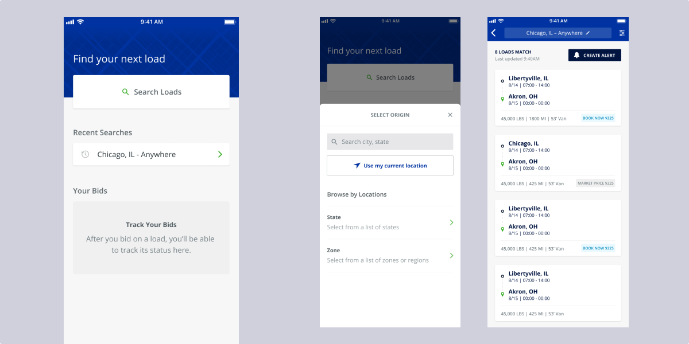
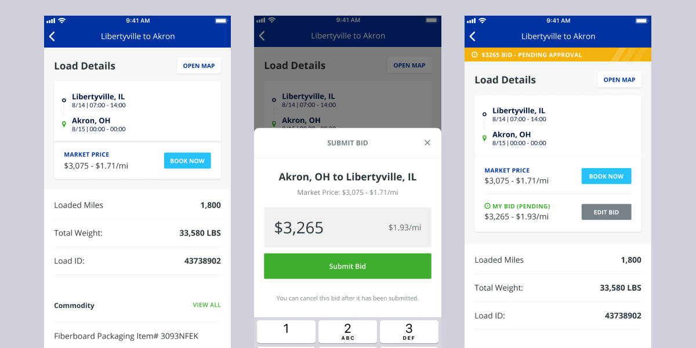
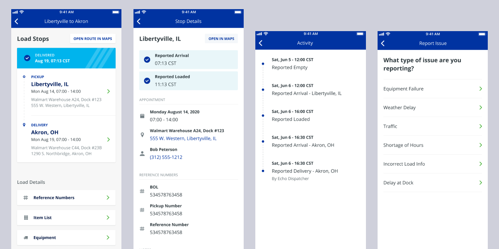

Echo Logistics

Echo Logistics creates technology to help coordinate and connect shippers and carriers across the world. Echo came to Eight Bit looking to update the design of their carrier mobile app UI, design system, and app architecture and user flow.
Echo needed an overhaul of their carrier mobile app. The app had grown in complexity and accrued a bit of design and dev debt over the past few years. We wanted to update the visuals of the app for a modern and clean look while updating and simplifying all of the interaction patterns across the app experience. I worked on every phase of this project from initial scoping and planning, design and prototyping, and managing and implementing user and stakeholder feedback.
🔎 Activities & Accomplishments
- UI, UX, and IA overhaul with new visual design, patterns, and user flows. Our design had to solve immediate problems and issues the product was facing while planning for growth and new features that were months or years out from being added.
- Design and maintained the design system governing the carrier mobile app. This included documenting and sharing the design system with outside teams.
- Collaborated with product owners and developers to balance trade-offs between speed of implementation and satisfying user needs.
- Reviewed and addressed user testing and stakeholder feedback during the design process.
🎉 Outcomes & Impact
- All design work and systems were handed off to a new internal design team.
- In all honesty, after we handed off the work, we didn't hear much from the team. All stakeholders were very satisfied with our work and our collaboration across teams was very productive and positive. But this is sometimes the nature of agency work, we don't get to see how it impacts the business after it's released to their customers.
Home and profile. The home page plays a key role in keeping drivers on track by allowing them to check-in with dispatch, status updates, recommended activity. The user profile has some small but, important preferences that can shape how the app works with the driver.
Find a load. Drivers can open the app and search for a job (or load). This allowed them to plan their routes and find work when they have availability. This includes the ability to find loads based on location, create alerts for jobs and searches, recent searches, and search result filters.
Load Bidding. After the user finds a job they're interested in, they can submit a bid for the job. Carriers and shippers can negotiate rates and get details on what the job requires.
Load Detail. After the bid has been accepted, the app tracks the driver's delivery progress. This allows carriers and shippers to communicate about any issues that come up during transit.